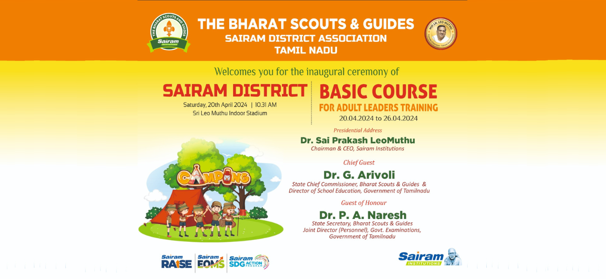
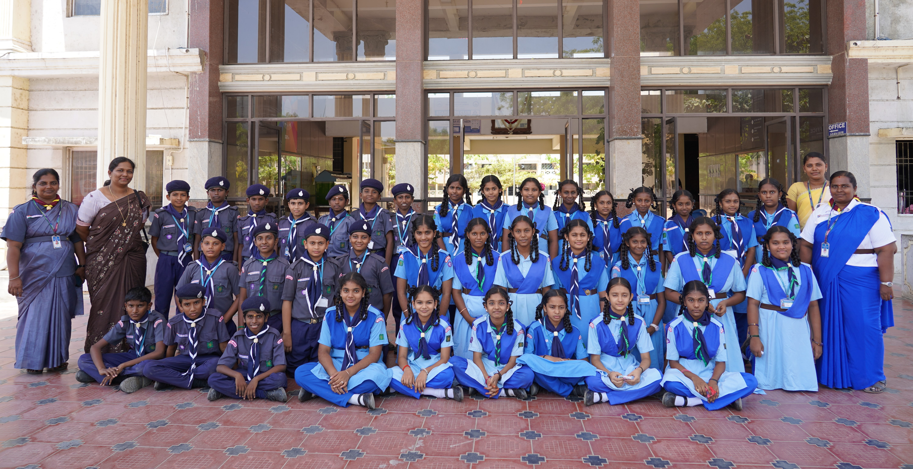
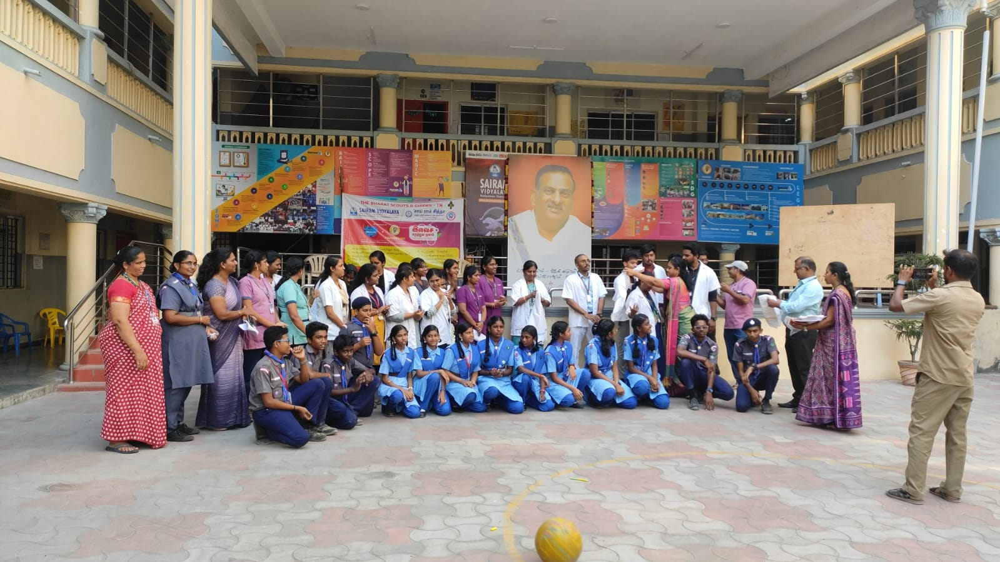

Scout is meant for obtaining character training and preparing for good citizenship designed for the interest of Boys and Girls. When a student participates in Scout and Guide he or she develops the sense of trust, loyalty, healthfulness, friendship, courteous and obedience. Our school students participate for undergoing various camps and they receive the Governor’s Award every year.
To create a generation of empowered, compassionate, and skilled individuals who contribute positively to their communities and the world, guided by the principles of integrity, respect, and service.
Our mission is to provide young people with opportunities for adventure, personal growth, and leadership development through outdoor activities, community service projects, and values-based education. We aim to instill in our members a sense of responsibility, self-reliance, and commitment to making a difference in the world around them.
Forge Ahead
Blaze a Trail

Pitch In
Trailblazer
Scout's Honor
Scout's Honor


Chairman & CEO, District Chief Commissioner of Bharat Scouts & Guides Sairam District Association
District Commissioner Scout of Bharat Scouts & Guides Sairam District Association

Vice President of Bharat Scouts and Guides Sairam District Association
District Commissioner Rover

Sairam
The Barat Scouts and Guides at Sairam Engineering College are likely a student organization dedicated to promoting the principles and values of scouting and guiding among the college community. Scouts and Guides organizations typically focus on character development, leadership skills, outdoor activities, and community service.

Sairam
In the context of Sairam Engineering College, the Barat Scouts and Guides would likely organize various events and activities such as camping trips, community service projects, leadership training, and skill-building workshops. These activities aim to foster teamwork, responsibility, and personal growth among the students involved.
Sairam
The organization may also participate in larger scouting and guiding events at regional, national, or international levels, providing opportunities for members to interact with scouts and guides from other colleges and communities.